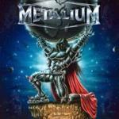

|
|
||
Metalium : Hero-Nation -chapter three- (2002) |
|

http://www.metalium.de |
1. Source of Souls 1:13 |
7.5/10 |
|
El último disco de Metalium, "Hero-Nation -chapter three-", gira alrededor de las vidas de una serie de personajes, tanto históricos como legendarios, que de una u otra forma pueden considerarse héroes. El disco tiene un estilo distinto de los dos anteriores, que dicho sea de paso se parecían bastante entre si, acercándose más al sonido típico de la mayoría de bandas europeas que hacen power metal, aunque sigue siendo claramente Metalium. Esto, que bastante gente ha considerado como señal de madurez en la banda a mi me parece un esfuerzo por renovarse que no ha terminado de salir redondo. Y no es que el disco sea malo, al contrario, pero los anteriores tenían más fuerza y originalidad que éste, y yo esperaba algo más. Además la producción no me termina de gustar: la batería suena mucho, las guitarras podrían oirse más, y la voz también suena algo apagada. El disco comienza con "Source of Souls", una de las típicas intros de Metalium, tenebrosa e inquietante. "Revenge of Tizona" cuenta parte de la historia del Cid, famoso caballero castellano del siglo XI, y su espada Tizona. Se puede destacar el ritmo rápido, con la batería sin embargo demasiado presente, y a Henning Basse dejándose la garganta en el estribillo. En "In the Name of Blood", se habla de la historia del emperador romano Nerón. Aquí escuchamos un ritmo más moderado con cambios, los típicos coros gritados de Metalium y un sólo de gritarra bastante llamativo. La cuarta canción, "Rasputin", trata de este misterioso personaje ruso de la era de los zares, sobre un tempo bastante rápido, y con un estribillo pegadizo. "Odin's Spell" trata del rey de los dioses nórdicos. Este tema está definido por un tempo moderado, pero muy marcado, y un estribillo muy melodioso. El sexto corte, "Accused to be a Witch", trata de la vida, o más bien de la muerte, de Juana de Arco. Ritmo moderado, un tono un poco más oscuro que el resto, y de nuevo coros gritados, en un estilo muy propio de Metalium. En "Throne in the Sky", se habla de Loreley, imagen fantasmal que trata de atraer a los marinos que navegan por el rio Rin. Velocidad trepidante, y fuerza arrolladora en esta canción. "Odyssey" se inspira en la famosa obra de Homero. Rápida y potente, lo más destacable es el estribillo, donde de nuevo la voz de Basse da todo lo que puede. En "Fate Conquered the Power" se habla del imperio inca, y de como fue conquistado por los españoles en el sigo XVI. Aquí encontramos ritmo lento, con cambios, y un estribillo bastante pegadizo. "Infinite Love" es una balada, inspirada en Romeo y Julieta, y donde aparece una voz femenina para dar la réplica a Basse. Es demasiado lenta hasta para una balada, y aunque no suena mal se hace algo pesada. "Hero Nation" es un homenaje de la banda a sus fans, a los que llama Metalians. Un tema rápido, con un estribillo trabajado, coros señoriales y un solo de guitarra vertiginoso. Al final de la pista 11, hay una canción oculta titulada "Heart of the Tiger", de tono bastante pomposo, y dedicada a un famoso boxeador alemán, cuyo nombre no me atrevo a transcribir de oido. |
||
Rubén Béjar |
||